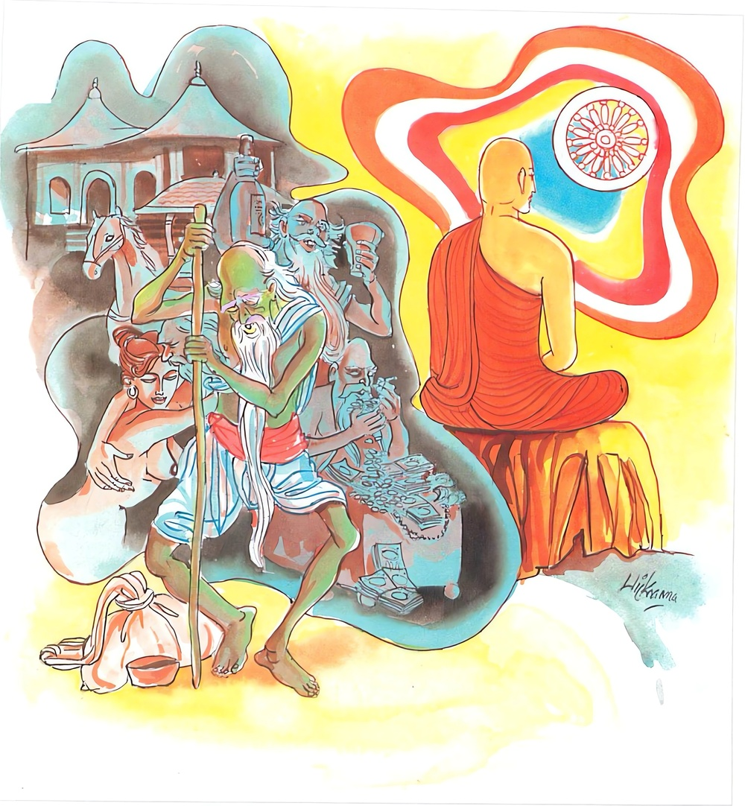

8-10 දසවන ඛාණුකොණ්ඩඤ්ඤ තෙරණුවන්ගේ වස්තුවයි.
මෙම කතාව සද්ධර්ම සාගරයෙන් ද කියවන්න.
යො ච වස්සසතං ජීවෙ දුප්පඤ්ඤො අසමාහිතො
එකාහං ජීවිතං සෙය්යො පඤ්ඤවන්තස්ස ඣායිනො.
(ශමථවිදර්ශනාප්රඥාය) මාර්ගඵලප්රඥාය යන ලෞකික ලෝකෝත්තර ප්රඥායෙන් යුක්ත නොවන හෙයින්) ප්රඥා නැත්තාවූ, (උපචාරසමාධි අර්පණාසමාධියෙන්) සමාහිත නොවූ, යම් පුද්ගලයකු ඉදින් හවුරුදු සියයක් ජීවත් වූ නමුදු, ඔහුගේ ජීවත් වීමට වඩා ශමථවිදර්ශනාප්රඥායෙන් ද මාර්ගඵලප්රඥායෙන් ද යුක්ත වූ, ශමථවිදර්ශනාභාවනායෙහි නියුක්ත වූවහුගේ එක් දවසකුදු ජීවත් වීම උතුමි.

යො ච වස්සසතං ආදි මේ ධර්මදේශනාව බුදුරදුන් දෙව්රම වාසයකරන කාලයෙහි ඛාණුකොණ්ඩඤ්ඤ තෙරුන් අරභයා දේශනා කරනලදි.
ඒ තෙරුන්වහන්සේ බුදුන් සමීපයෙහ කමටහන් ඉගෙන ආරණ්යවාසීව රහත්බවට පැමිණ ඒ බව බුදුරදුන්ට දන්වන්නෙමියි එනවිට අතරමගදී ක්ලාන්තය හැදී මගින් මෑත්වී ගල්තලාවක හිඳගෙන ධ්යානයට සමවැදුණාහ. ඉන්පසු පන්සීයක් පමණ සොරු ගම් කොල්ලකා තම ශක්ති පමණින් බඩුපොදි බැඳගෙන හිස මත තබා එනවිට බොහෝ දුර ගිය බැවින් විඩාවට පැමිණියෙමු. මේ ගල්තලාවේ විවේක ගෙන යන්නෙමුයයි මගින් ඉවත්ව ගල්තලාව ළඟට ගොස් තෙරුන් දුටුනමුත් මේ කණුවක්යයි සිතූහ. එක් සොරෙක් තම බඩුමිටිය තෙරුන්ගේ හිස මත තැබීය. තවත් එකෙක් ඒ උඩ තම බඩුමිටිය තැබීය. මේ ආකාරයෙන් පන්සීයක් සොරු තමතමන්ගේ බඩුමිටි තෙරුන් මත ගොඩ ගසා ඒ උඩ නිදාගත්හ. උදේ හිරපායා එනවිට ඇහැරී තමතමන්ගේ බඩුමිටි ගනිද්දී තෙරුන් දැක අමනුෂ්යයෙහිකියි සිතා පැනදුවන්ට පටන්ගත්හ.
තෙරණුවෝ ඔවුන්ට කතාකොට උපාසකවරුනි, බිය නොවව්, මම පැවිද්දෙක්මියි කීහ. ඔවුහු තෙරුන් පාමුල වැඳ වැටී අපට සමාවුව මැනවි. අප සිතා ගත්තේ කණුවක්ය කියායයි තෙරුන් සමාකරවාගෙන, සොරදෙටුවා මම ආර්යයන්වහන්සේ සමීපයෙහි පැවිදිවෙමියි කී කල්හි, අපිත් පැවිදි වන්නෙමු යයි සෙස්සෝද පැවිදි වීමට ඒකච්ඡන්දයෙන් ඉදිරිපත්ව තෙරුන්ගෙන් පැවිද්ද ඉල්ලූහ. තෙරණුවෝත් සංකිච්චසාමණේරයන්මෙන් ඔවුන් පැවිදි කළහ. ඉන්පසු උන්වහන්සේ ඛාණුකොණ්ඩඤ්ඤ නමින් ප්රකටවූහ.
උන්වහන්සේ ඒ භික්ෂූන් සමඟ බුදුන් සමීපයට ගොස් කිම කොණ්ඩඤ්ඤ ඔබට අන්තේවාසිකයන් ලැබුණේදැයි ඇසූ කල ඒ පුවත දන්වා සිටියහ. මහණෙනි, එසේදැයි විචාරා, ස්වාමීනි එසේය. මින්පෙර අපි මෙබඳු සෘද්ධ්යනුභාවයක් දැක නැත්තෙමු. එනිසා පැවිදිවීමයි කීකල්හි, මහණෙනි, තොප කළා සේ අනුවණ වැඩක යෙදී වර්ෂ සියයක් ජීවත්වීමට වඩා දැන් තොප ප්රඥාසම්පදාවෙහි යෙදී එක්දිනක් ජීවත්වීම අර ජීවිතයට වඩා වටින්නේයයි කියා අනුසන්ධි ගළපා දහම් දෙසමින් මේ ගාථාව වදාළහ.
නුවණ නැතිව සියවසක්
යමෙකු ජීවත්වුව ලොව
නුවණැතිව එක දවසක්
ජීවත්වීම වැදගති.
එහි දුප්පඤ්ඤො යනු ප්රඥාවෙනි තොරවීමයි. පඤ්ඤාවන්තස්ස යනු ප්රඥාව ඇති තැනැත්තාගේයි. සෙස්ස පෙර පරිදිමය. දේශනාවසානයෙහි ඒ භික්ෂූන් පන්සීයම පිළිසිඹියාත් සමග රහත්බවට පත්වූහ. පැමිණි මහජනයාටද දේශනාව ප්රයෝජනවත් විය.